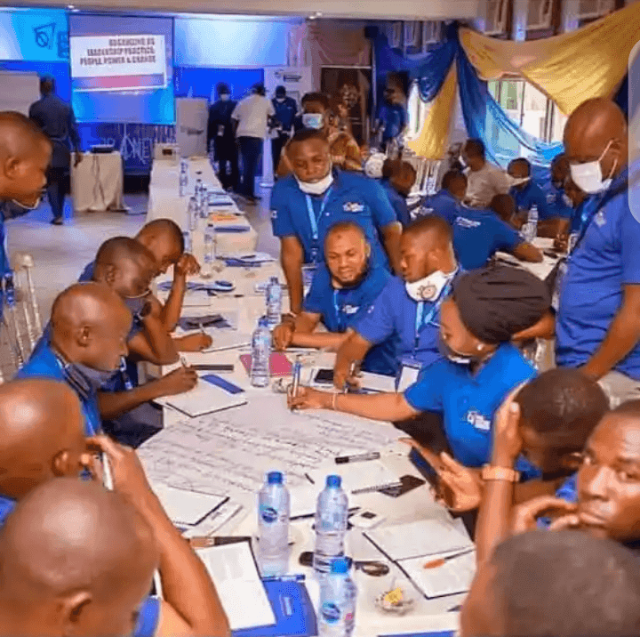

Bartagol Hayɓugo Kayamba Gonnaaji
Atalbere LGI e Yola ko bartagol saajel layɗe kayamba gonnaaji. Ina waɗi tatnugol hayɓugo e fillal maɗinki. Atalbere ngal maa hayɓe teere e tekniki jommere. Ina waɗi tatnugol gaccere e banne kayamba gonnaaji.